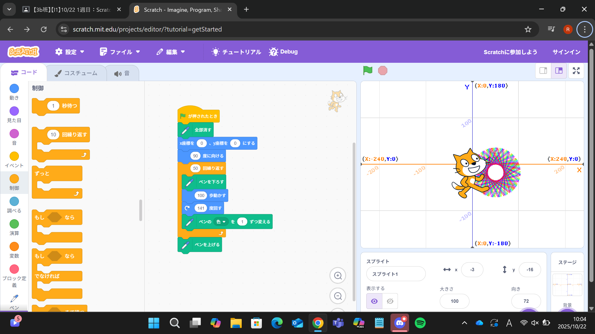
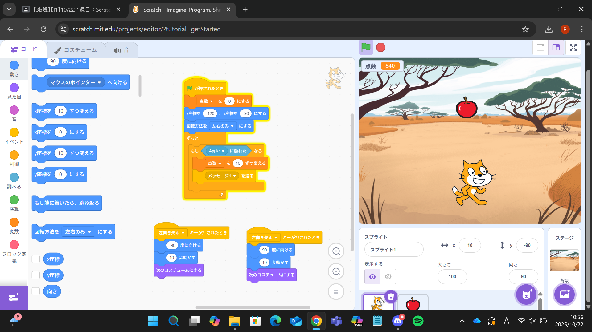

1週目のレポート ： 公大高専１年実習I-1
3b班24番 rinrinrin888
第1週目
1-1 サイエンスアート

1.内容
Scratchでペン機能を活用し、繰り返し処理と座標移動を組み合わせて図形を描く方法を学んだ。
さらにペンの色や角度を変化させることで、複雑で美しい模様を表現できることを習得した。
2.感想
Scratchで模様を描くプログラムを作成し、繰り返し処理の面白さを深く理解できた。
自分の操作によって図形が変化する様子を視覚的に確認でき、試行錯誤を通じて達成感とプログラミングの楽しさを実感した。
1-2 ゲーム

1.内容
Scratchでイベント処理や座標移動を用いて、りんごをキャッチするゲームを作成した。
スプライト間のメッセージ送信や変数によるスコア管理を学び、キャラクターの動きや得点の仕組みを理解し、ゲームの基本構造を習得した。
2.感想
りんごをキャッチするゲームを作成し、イベント処理や変数を使ったスコア管理の仕組みを理解できた。
自分の操作でスプライトが動き、得点が増える様子を確認でき、プログラムが動く楽しさと達成感を強く感じた。
1-3 ホームページ作成
私のホームページ
1.内容
今回は既存のHTMLとコードをそのまま利用し、構造やデザインには手を加えず、日本語のテキスト部分のみを自分用に書き換えた。
コード編集は行わず、内容の表現を調整する作業を学んだ。
2.感想
自分が日本語のテキストを書き換えたことで、ページ上の表示が実際に変わった瞬間に大きな達成感を覚えた。
わずかな変更でも結果が反映されることに感動し、Webページ編集の面白さを実感できた。）
各ページへのリンク
1週目のレポート
2週目のレポート
3週目のレポート
私のホームページ